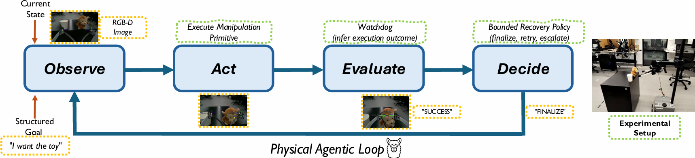
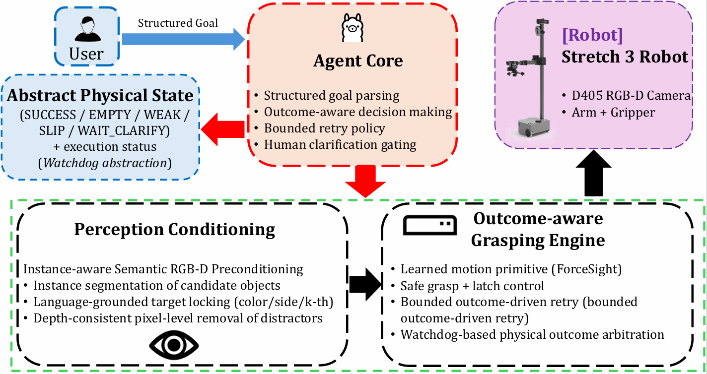
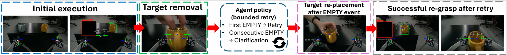
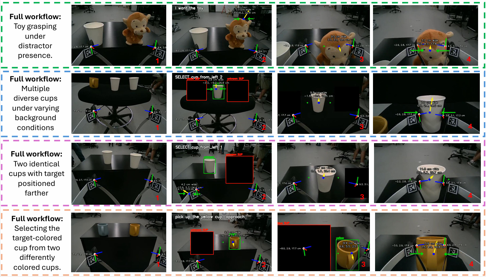
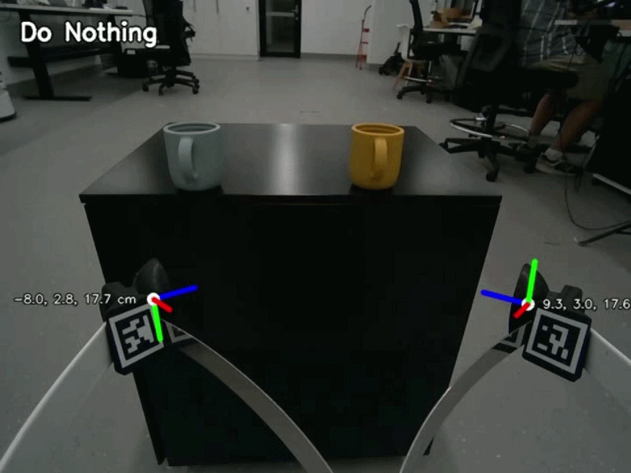
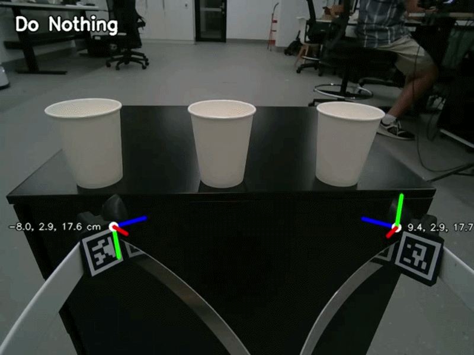
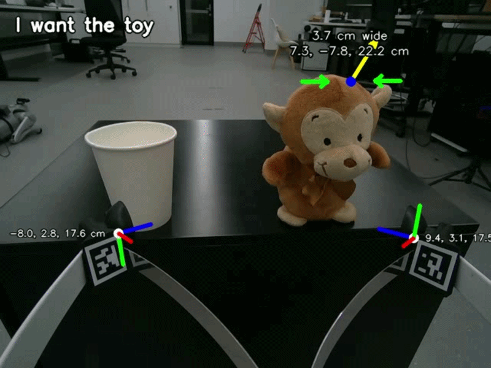

Explicit execution-state monitoring
Transforms noisy physical feedback into discrete, decision-ready states for the agent loop.
Execution-grounded runtime monitoring for robust real-world grasping.
Instead of treating grasp execution as a one-shot black box, this system exposes runtime outcomes as explicit states. A lightweight Watchdog monitors execution, surfaces events like SUCCESS or EMPTY, and enables a bounded policy to finalize, retry, or ask for clarification.
Transforms noisy physical feedback into discrete, decision-ready states for the agent loop.
Wraps the learned manipulation primitive instead of changing the underlying grasp model.
Maintains target consistency across clutter, target similarity, and induced empty grasp scenarios.
A compact summary of the physical agentic loop and its bounded recovery logic.

Structured goals, perception conditioning, outcome-aware execution, and a bounded decision policy are organized into a single physical agentic loop.

Receive the structured task goal and the current RGB-D scene state.
Execute the unmodified manipulation primitive on the selected target.
Infer discrete outcomes from gripper telemetry and execution traces.
Finalize, retry once, or escalate through clarification when uncertainty persists.
A recoverable empty grasp triggers a single bounded retry before escalation.

From distractor-heavy scenes to color and spatial ambiguity, the system keeps the target grounded while adapting to execution outcomes.


Color-conditioned grounding for choosing the intended cup among visually distinct candidates.

Maintains the intended target despite a salient distractor placed next to the workspace object.

Grounds the requested target among similar cups under spatial ambiguity and bounded decision-making.

Selects the intended toy while ignoring the nearby cup and preserving semantic target consistency.
@article{wang2026physicalagenticloop,
title = {A Physical Agentic Loop for Language-Guided Grasping with Execution-State Monitoring},
author = {Wang, Wenze and Hosseinzadeh, Mehdi and Dayoub, Feras},
journal = {arXiv preprint arXiv:XXXX.XXXXX},
year = {2026},
note = {Preprint under review; update identifier after announcement}
}